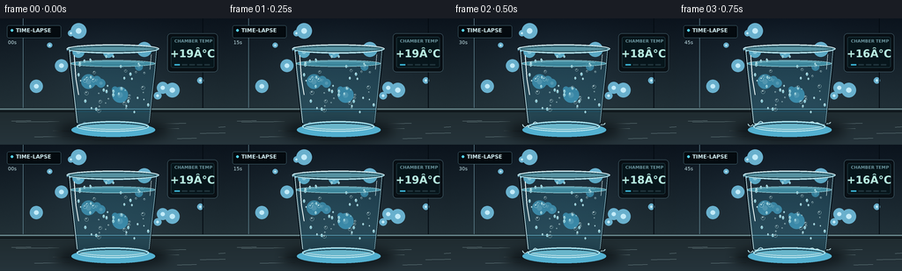
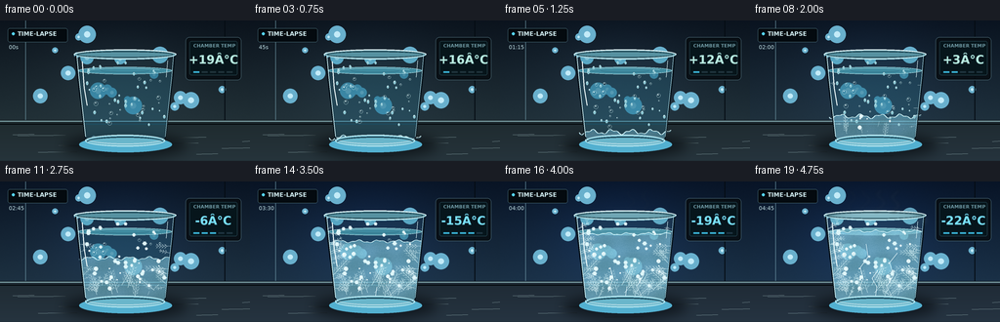

CODING AGENTS AS PIXEL WORLD MODELS
traex/GPT-5.6-Sol · phygen_091
点击播放 · 原生 RGB 像素
逐轮保存的候选
回放视频、检查图与代码变化。
每份候选均可单独播放。实际图片检查记录在下方工具轨迹中。
候选 01播放与检查图
点击播放 · 原生 RGB 像素


展开代码变化
--- 上一保存版本
+++ 本次保存版本
@@ -0,0 +1,318 @@
+from pathlib import Path
+import math
+import numpy as np
+from PIL import Image, ImageDraw, ImageFont, ImageFilter
+import artifact_io
+
+# Procedural, deterministic macro timelapse of water freezing in a glass.
+W, H, N, FPS = 256, 144, 20, 4.0
+S = 4
+w, h = W*S, H*S
+ROOT = Path(__file__).resolve().parent
+rng = np.random.default_rng(91091)
+
+FONT_REG = "/usr/share/fonts/truetype/dejavu/DejaVuSans.ttf"
+FONT_BOLD = "/usr/share/fonts/truetype/dejavu/DejaVuSans-Bold.ttf"
+
+def font(size, bold=False):
+ path = FONT_BOLD if bold else FONT_REG
+ try: return ImageFont.truetype(path, size*S)
+ except: return ImageFont.load_default()
+
+def sp(points):
+ return [(int(x*S), int(y*S)) for x,y in points]
+
+def box(b): return tuple(int(v*S) for v in b)
+def sw(v): return max(1, int(v*S))
+def clamp01(x): return max(0.0, min(1.0, x))
+def smooth(x):
+ x=clamp01(x); return x*x*(3-2*x)
+
+def glass_left(y): return 77 + (y-34)/90*10
+def glass_right(y): return 179 - (y-34)/90*10
+
+def line(draw, pts, fill, width=1): draw.line(sp(pts), fill=fill, width=sw(width), joint="curve")
+
+# Fixed scene details create coherent growth from frame to frame.
+bokeh = [(rng.uniform(8,248),rng.uniform(12,92),rng.uniform(2,9),rng.uniform(.08,.24)) for _ in range(20)]
+drops = [(rng.uniform(84,172),rng.uniform(43,108),rng.uniform(.8,2.0),rng.uniform(0,6.28)) for _ in range(33)]
+bubbles = [(rng.uniform(91,165),rng.uniform(59,112),rng.uniform(.6,2.1),rng.uniform(0,1)) for _ in range(22)]
+# Crystals: start location, trigger, direction, length and branching phase.
+crystals=[]
+for k in range(38):
+ trigger=rng.uniform(.12,.88)
+ # most nucleate from cold base and walls
+ mode=rng.random()
+ if mode<.56:
+ x=rng.uniform(91,164); y=rng.uniform(106,121); ang=rng.uniform(3.75,5.68)
+ elif mode<.78:
+ y=rng.uniform(56,110); x=glass_left(y)+rng.uniform(0,4); ang=rng.uniform(-1.0,.2)
+ else:
+ y=rng.uniform(56,110); x=glass_right(y)-rng.uniform(0,4); ang=rng.uniform(2.9,4.1)
+ crystals.append((x,y,trigger,ang,rng.uniform(7,24),rng.uniform(0,6.28)))
+# Frost fern origins along outer glass.
+ferns=[]
+for side in [-1,1]:
+ for k in range(10):
+ y=rng.uniform(47,117); trigger=rng.uniform(.28,.84)
+ x=(glass_left(y)+1) if side<0 else (glass_right(y)-1)
+ angle=(rng.uniform(-.75,.25) if side<0 else rng.uniform(2.9,3.9))
+ ferns.append((x,y,trigger,angle,rng.uniform(7,16),rng.uniform(0,6.28)))
+
+def draw_branch(layer, start, angle, length, progress, color, width=0.7, depth=2, phase=0):
+ """Draw a deterministic fern/snow-crystal branch, with progressive length."""
+ if progress<=0: return
+ d=ImageDraw.Draw(layer)
+ L=length*clamp01(progress)
+ x,y=start; x2=x+math.cos(angle)*L; y2=y+math.sin(angle)*L
+ line(d,[(x,y),(x2,y2)],color,width)
+ if depth<=0 or progress<.22: return
+ count=max(1,int(L/3.4))
+ for j in range(1,count+1):
+ frac=j/(count+1)
+ bx=x+(x2-x)*frac; by=y+(y2-y)*frac
+ subprog=clamp01((progress-frac*.34)/.66)
+ sl=length*(.28-.06*frac)
+ aoff=.66 + .08*math.sin(phase+j)
+ draw_branch(layer,(bx,by),angle-aoff,sl,subprog,color,max(.35,width*.72),depth-1,phase+j)
+ draw_branch(layer,(bx,by),angle+aoff,sl,subprog,color,max(.35,width*.72),depth-1,phase-j)
+
+def body_mask():
+ m=Image.new("L",(w,h),0); d=ImageDraw.Draw(m)
+ d.polygon(sp([(77,34),(179,34),(169,121),(164,126),(92,126),(87,121)]),fill=255)
+ d.ellipse(box((87,115,169,128)),fill=255)
+ return m
+BODY=body_mask()
+
+def water_mask(front=None):
+ m=Image.new("L",(w,h),0); d=ImageDraw.Draw(m)
+ pts=[(80,51),(176,51),(169,121),(164,125),(92,125),(87,121)]
+ d.polygon(sp(pts), fill=255); d.ellipse(box((80,47.5,176,55)),fill=255); d.ellipse(box((87,116,169,127)),fill=255)
+ return Image.composite(m,Image.new("L",(w,h),0),BODY)
+WATER=water_mask()
+
+def alpha_composite_mask(base, rgba, mask):
+ lay=Image.new("RGBA",(w,h),rgba)
+ lay.putalpha(ImageChops.multiply(lay.getchannel("A"),mask) if False else mask.point(lambda a:a*rgba[3]//255))
+ return Image.alpha_composite(base,lay)
+
+def render(index):
+ p=index/(N-1)
+ cold=smooth(p)
+ # Cinematic background: chamber darkens and shifts blue as temperature falls.
+ yy,xx=np.mgrid[0:h,0:w]
+ y=yy/S; x=xx/S
+ wall_t=np.clip(y/108,0,1)[...,None]
+ top=np.array([11-3*cold,19+1*cold,28+10*cold],float)
+ bot=np.array([34-7*cold,49+1*cold,55+17*cold],float)
+ arr=top*(1-wall_t)+bot*wall_t
+ glow=np.exp(-(((x-123)/105)**2+((y-59)/78)**2)*2.0)[...,None]
+ arr += glow*np.array([8-5*cold,11,13+14*cold])
+ # subtly textured glass-fronted refrigerator background
+ noise=np.random.default_rng(400+index).normal(0,0.9,(h,w,1))
+ arr=np.clip(arr+noise,0,255).astype(np.uint8)
+ img=Image.fromarray(arr,"RGB").convert("RGBA")
+ d=ImageDraw.Draw(img,"RGBA")
+ # Out-of-focus chamber lights
+ for bx,by,br,ba in bokeh:
+ tint=(105,176,205,int(255*ba*(.6+.4*cold)))
+ d.ellipse(box((bx-br,by-br,bx+br,by+br)),fill=tint)
+ d.ellipse(box((bx-br*.35,by-br*.35,bx+br*.35,by+br*.35)),fill=(195,235,248,int(ba*170)))
+ # background vertical panel seams
+ line(d,[(26,0),(26,103)],(121,165,179,20),.5)
+ line(d,[(230,0),(230,103)],(4,11,18,70),1)
+ # Stone/metal shelf
+ d.rectangle(box((0,102,256,144)),fill=(24,34+int(3*cold),39+int(8*cold),255))
+ for sy in range(103,144):
+ q=(sy-103)/41
+ col=(31+int(7*q),43+int(9*q),47+int(12*q+7*cold),255)
+ d.line([(0,sy*S),(w,sy*S)],fill=col,width=S)
+ line(d,[(0,103),(256,103)],(132,170,176,80),1)
+ line(d,[(0,106),(256,106)],(3,8,11,80),1)
+ # Fine scratches on shelf
+ for k in range(13):
+ sx=(k*47+13)%256; ey=117+(k*11)%24
+ line(d,[(sx,ey),(min(256,sx+22+(k%4)*9),ey-.3)],(158,185,188,15),.35)
+ # Contact shadow / cold blue reflection
+ shadow=Image.new("RGBA",(w,h),(0,0,0,0)); sd=ImageDraw.Draw(shadow,"RGBA")
+ sd.ellipse(box((65,116,191,140)),fill=(0,4,8,145)); shadow=shadow.filter(ImageFilter.GaussianBlur(sw(6)))
+ img=Image.alpha_composite(img,shadow)
+ d=ImageDraw.Draw(img,"RGBA")
+ d.ellipse(box((81,119,176,135)),fill=(83,176,208,int(18+35*cold)))
+
+ # Temperature monitor, frosted at late frames.
+ panel=Image.new("RGBA",(w,h),(0,0,0,0)); pd=ImageDraw.Draw(panel,"RGBA")
+ pd.rounded_rectangle(box((190,17,247,61)),radius=sw(4),fill=(7,13,18,225),outline=(91,126,139,190),width=sw(.7))
+ pd.rounded_rectangle(box((194,21,243,56)),radius=sw(2),fill=(5,20,25,230),outline=(57,104,113,145),width=sw(.5))
+ pd.text((198*S,23*S),"CHAMBER TEMP",font=font(4.8,True),fill=(125,172,182,220))
+ temp=round(19-41*cold)
+ tstr=f"{temp:+d}°C"
+ col=(120,222,246,255) if temp<=0 else (185,234,222,255)
+ # center numeric display
+ bb=pd.textbbox((0,0),tstr,font=font(12,True)); tw=bb[2]-bb[0]
+ pd.text(((218.5*S-tw/2),33*S),tstr,font=font(12,True),fill=col,stroke_width=sw(.2),stroke_fill=(40,105,115,100))
+ # descending blue status bars
+ for j in range(5):
+ active=j < int(1+4*cold)
+ pd.rectangle(box((198+j*8.5,52,204+j*8.5,53.5)),fill=((64,200,237,220) if active else (42,70,76,120)))
+ img=Image.alpha_composite(img,panel)
+
+ # Glass interior: faint tint showing the background through it.
+ tint=Image.new("RGBA",(w,h),(72,157,184,int(13+14*cold))); tint.putalpha(BODY.point(lambda a:int(a*(13+14*cold)/255)))
+ img=Image.alpha_composite(img,tint)
+ # Liquid volume, initially transparent blue-gray.
+ liquid=Image.new("RGBA",(w,h),(0,0,0,0)); la=np.array(liquid)
+ wm=np.array(WATER)/255.0
+ gy=np.arange(h)[:,None]/S
+ shade=np.clip((gy-49)/78,0,1)
+ la[...,0]=np.where(wm>0,34+18*shade,0).astype(np.uint8)
+ la[...,1]=np.where(wm>0,105+34*shade,0).astype(np.uint8)
+ la[...,2]=np.where(wm>0,132+44*shade,0).astype(np.uint8)
+ la[...,3]=np.where(wm>0,(46+18*(1-cold))*wm,0).astype(np.uint8)
+ liquid=Image.fromarray(la,"RGBA")
+ img=Image.alpha_composite(img,liquid)
+ d=ImageDraw.Draw(img,"RGBA")
+ # Water surface and concentric micro-ripples that settle as freezing begins.
+ ripple=1-cold
+ d.ellipse(box((80,47.5,176,55)),fill=(64,139,160,35),outline=(179,229,235,125),width=sw(.7))
+ d.arc(box((91,49+math.sin(index*.8)*.25,164,53)),190,350,fill=(209,244,246,int(75*ripple)),width=sw(.45))
+ d.arc(box((103,49.7,153,52.8)),10,172,fill=(31,85,108,int(80*ripple)),width=sw(.45))
+
+ # Ice advances upward from the chilled base with an uneven crystalline front.
+ freeze=smooth((p-.10)/.84)
+ front=121-70*freeze
+ ice_mask=Image.new("L",(w,h),0); imd=ImageDraw.Draw(ice_mask)
+ wave=[]
+ for X in np.linspace(81,175,65):
+ wobble=(2.1*math.sin(X*.31+index*.12)+1.0*math.sin(X*.77))* (1-freeze*.55)
+ wave.append((X,front+wobble))
+ poly=wave+[(169,125),(87,125)]
+ imd.polygon(sp(poly),fill=255)
+ ice_mask=Image.composite(ice_mask,Image.new("L",(w,h),0),WATER)
+ # translucent textured ice
+ icearr=np.zeros((h,w,4),dtype=np.uint8)
+ texrng=np.random.default_rng(8123)
+ tex=texrng.normal(0,1,(h,w))
+ fine=(np.sin(xx*.055)+np.sin(yy*.071+xx*.013))*0.5
+ icearr[...,0]=np.clip(126+12*tex+9*fine,0,255)
+ icearr[...,1]=np.clip(191+10*tex+10*fine,0,255)
+ icearr[...,2]=np.clip(213+9*tex+15*fine,0,255)
+ icearr[...,3]=(np.array(ice_mask)/255*(105+65*freeze)).astype(np.uint8)
+ img=Image.alpha_composite(img,Image.fromarray(icearr,"RGBA"))
+ d=ImageDraw.Draw(img,"RGBA")
+ if freeze>0:
+ # luminous freezing front
+ line(d,wave,(207,242,247,int(115+70*freeze)),.8)
+ line(d,[(x,y+1.2) for x,y in wave],(65,145,177,70),.45)
+
+ # Trapped air bubbles: drifting when liquid, immobilized and bright after front passes.
+ for bx,by,br,ph in bubbles:
+ liquid_here=by < front
+ if liquid_here:
+ cy=by-((index*.55+ph*5)%6)*(1-freeze)
+ alpha=int(60*(1-freeze)+18)
+ d.ellipse(box((bx-br,cy-br,bx+br,cy+br)),outline=(207,239,240,alpha),width=sw(.4))
+ d.ellipse(box((bx-br*.45,cy-br*.6,bx,cy-br*.15)),fill=(238,255,255,alpha))
+ else:
+ d.ellipse(box((bx-br,by-br,bx+br,by+br)),fill=(222,245,248,90),outline=(252,255,255,160),width=sw(.45))
+ d.ellipse(box((bx-br*.5,by-br*.55,bx-br*.05,by-br*.1)),fill=(255,255,255,170))
+
+ # Growing dendritic crystals, clipped to water volume.
+ crystal_layer=Image.new("RGBA",(w,h),(0,0,0,0))
+ for cx,cy,trig,ang,L,phase in crystals:
+ gp=clamp01((freeze-trig)/.18)
+ # only reveal where the solidification front has passed
+ if cy+2 >= front:
+ draw_branch(crystal_layer,(cx,cy),ang,L,gp,(221,249,252,int(80+110*gp)),.55,2,phase)
+ clipped=Image.new("RGBA",(w,h),(0,0,0,0)); clipped.paste(crystal_layer,(0,0),WATER)
+ img=Image.alpha_composite(img,clipped)
+
+ # Interior stress cracks late in the timelapse.
+ crack=smooth((p-.68)/.28)
+ if crack>0:
+ cd=ImageDraw.Draw(img,"RGBA")
+ paths=[[(111,113),(116,99),(113,88),(121,77),(119,64)],
+ [(146,119),(140,107),(147,96),(143,83),(151,73)],
+ [(128,121),(130,108),(125,99),(131,91)]]
+ for q,path in enumerate(paths):
+ count=max(2,int(1+(len(path)-1)*crack))
+ line(cd,path[:count],(237,252,255,int(150*crack)),.5)
+ line(cd,[(x+1,y) for x,y in path[:count]],(47,114,148,int(100*crack)),.35)
+
+ # Glass boundary/rim, thick base, and optical highlights.
+ d=ImageDraw.Draw(img,"RGBA")
+ # dark refraction on side edges
+ line(d,[(77,34),(79,55),(87,120),(92,125)],(5,19,28,150),1.5)
+ line(d,[(179,34),(177,57),(169,121),(164,125)],(5,18,26,170),1.4)
+ line(d,[(78.5,35),(81,61),(87.5,119)],(208,240,244,135),.8)
+ line(d,[(177.5,35),(175.5,59),(169.2,119)],(176,226,238,90),.6)
+ # bright elongated reflections
+ line(d,[(84,42),(86,69),(89,87)],(245,255,255,120),1.1)
+ line(d,[(171.5,41),(170,58)],(231,252,255,75),.65)
+ # heavy base lens
+ d.ellipse(box((87,117,169,129)),fill=(105,182,203,30),outline=(196,238,245,170),width=sw(1.0))
+ d.arc(box((89,116,167,126.5)),5,175,fill=(248,255,255,110),width=sw(.7))
+ d.arc(box((89,119,167,129)),180,355,fill=(11,41,57,175),width=sw(1.0))
+ # rim is deliberately last, giving a sharp glass lip
+ d.ellipse(box((75.5,29.5,180.5,39.5)),fill=(86,145,160,20),outline=(211,242,246,190),width=sw(1.0))
+ d.ellipse(box((79,31.5,177,38)),outline=(18,47,58,160),width=sw(.8))
+ d.arc(box((76.5,29.8,180,39.3)),185,355,fill=(246,255,255,205),width=sw(.75))
+ d.arc(box((77,30,180,40)),5,177,fill=(112,183,202,125),width=sw(.7))
+
+ # Condensation becomes beads of ice, then branching exterior frost.
+ d=ImageDraw.Draw(img,"RGBA")
+ for dx,dy,rr,ph in drops:
+ if dx < glass_left(dy)+1 or dx > glass_right(dy)-1: continue
+ if cold<.52:
+ a=int(45+70*cold)
+ d.ellipse(box((dx-rr*.65,dy-rr,dx+rr*.65,dy+rr)),fill=(126,193,207,a//3),outline=(222,249,250,a),width=sw(.35))
+ d.ellipse(box((dx-rr*.3,dy-rr*.65,dx,dy-rr*.25)),fill=(255,255,255,a))
+ else:
+ g=clamp01((cold-.42)/.35)
+ d.ellipse(box((dx-rr,dy-rr,dx+rr,dy+rr)),fill=(211,242,247,int(55+75*g)),outline=(248,255,255,int(130+90*g)),width=sw(.45))
+ if g>.25:
+ for a in [0,math.pi/3,2*math.pi/3]:
+ line(d,[(dx-math.cos(a)*rr*1.4,dy-math.sin(a)*rr*1.4),(dx+math.cos(a)*rr*1.4,dy+math.sin(a)*rr*1.4)],(240,254,255,int(100*g)),.35)
+ frost_layer=Image.new("RGBA",(w,h),(0,0,0,0))
+ for fx,fy,trig,ang,L,phase in ferns:
+ gp=clamp01((cold-trig)/.20)
+ draw_branch(frost_layer,(fx,fy),ang,L,gp,(232,252,255,int(80+145*gp)),.55,2,phase)
+ img=Image.alpha_composite(img,frost_layer)
+
+ # Frost haze on upper outside surface in the final state.
+ haze=smooth((p-.72)/.27)
+ if haze>0:
+ fog=Image.new("RGBA",(w,h),(0,0,0,0)); fd=ImageDraw.Draw(fog,"RGBA")
+ fd.ellipse(box((74,28,183,52)),fill=(196,234,243,int(22*haze)))
+ fd.rectangle(box((80,35,176,76)),fill=(183,229,240,int(10*haze)))
+ fog=fog.filter(ImageFilter.GaussianBlur(sw(3)))
+ img=Image.alpha_composite(img,fog)
+ # wisps of cold vapor above rim at the very end
+ vapor=smooth((p-.76)/.22)
+ if vapor>0:
+ mist=Image.new("RGBA",(w,h),(0,0,0,0)); md=ImageDraw.Draw(mist,"RGBA")
+ for k in range(4):
+ pts=[]
+ for q in range(18):
+ Y=30-q*1.25
+ X=103+k*15 + math.sin(q*.46+k+index*.15)*4 + q*.10
+ pts.append((X,Y))
+ line(md,pts,(207,240,247,int((35+12*k)*vapor)),1.0+k*.14)
+ mist=mist.filter(ImageFilter.GaussianBlur(sw(1.8)))
+ img=Image.alpha_composite(img,mist)
+
+ # Documentary timelapse overlay.
+ od=ImageDraw.Draw(img,"RGBA")
+ od.rounded_rectangle(box((8,8,69,22)),radius=sw(2),fill=(4,10,15,135),outline=(117,171,186,55),width=sw(.4))
+ od.ellipse(box((12,12,15,15)),fill=(84,210,239,235))
+ od.text((18*S,10*S),"TIME-LAPSE",font=font(6,True),fill=(210,237,241,230))
+ stamp=f"{index*15:02d}s" if index*15<60 else f"{index*15//60:02d}:{index*15%60:02d}"
+ od.text((9*S,24*S),stamp,font=font(5.5,False),fill=(189,220,226,155))
+
+ # Downsample for clean subpixel antialiasing.
+ out=img.convert("RGB").resize((W,H),Image.Resampling.LANCZOS)
+ return np.asarray(out,dtype=np.uint8)
+
+frames=np.stack([render(i) for i in range(N)],axis=0)
+artifact_io.save(frames,ROOT)
+print(f"saved {len(frames)} frames: {frames.shape}, {frames.dtype}")
候选 02播放与检查图
点击播放 · 原生 RGB 像素

展开代码变化
--- 上一保存版本
+++ 本次保存版本
@@ -111,7 +111,7 @@
# subtly textured glass-fronted refrigerator background
noise=np.random.default_rng(400+index).normal(0,0.9,(h,w,1))
arr=np.clip(arr+noise,0,255).astype(np.uint8)
- img=Image.fromarray(arr,"RGB").convert("RGBA")
+ img=Image.fromarray(arr).convert("RGBA")
d=ImageDraw.Draw(img,"RGBA")
# Out-of-focus chamber lights
for bx,by,br,ba in bokeh:
@@ -169,7 +169,7 @@
la[...,1]=np.where(wm>0,105+34*shade,0).astype(np.uint8)
la[...,2]=np.where(wm>0,132+44*shade,0).astype(np.uint8)
la[...,3]=np.where(wm>0,(46+18*(1-cold))*wm,0).astype(np.uint8)
- liquid=Image.fromarray(la,"RGBA")
+ liquid=Image.fromarray(la)
img=Image.alpha_composite(img,liquid)
d=ImageDraw.Draw(img,"RGBA")
# Water surface and concentric micro-ripples that settle as freezing begins.
@@ -198,7 +198,7 @@
icearr[...,1]=np.clip(191+10*tex+10*fine,0,255)
icearr[...,2]=np.clip(213+9*tex+15*fine,0,255)
icearr[...,3]=(np.array(ice_mask)/255*(105+65*freeze)).astype(np.uint8)
- img=Image.alpha_composite(img,Image.fromarray(icearr,"RGBA"))
+ img=Image.alpha_composite(img,Image.fromarray(icearr))
d=ImageDraw.Draw(img,"RGBA")
if freeze>0:
# luminous freezing front
可观测工具轨迹
实际执行的命令与返回图片。
命令 1exit 0
/bin/bash -lc "ls -la && printf '\\n--- prompt.txt ---\\n' && cat prompt.txt && printf '\\n--- GENERATION_RULES.md ---\\n' && cat GENERATION_RULES.md && printf '\\n--- task_spec.json ---\\n' && cat task_spec.json"
命令 2exit 0
/bin/bash -lc "find . -maxdepth 2 -type f -printf '%p\\n' | sort"
命令 3exit 0
/bin/bash -lc "sed -n '1,240p' artifact_io.py"
命令 4exit 0
/bin/bash -lc "cat > generate.py <<'PY'
from pathlib import Path
import math
import numpy as np
from PIL import Image, ImageDraw, ImageFont, ImageFilter
import artifact_io
# Procedural, deterministic macro timelapse of water freezing in a glass.
W, H, N, FPS = 256, 144, 20, 4.0
S = 4
w, h = W*S, H*S
ROOT = Path(__file__).resolve().parent
rng = np.random.default_rng(91091)
FONT_REG = \"/usr/share/fonts/truetype/dejavu/DejaVuSans.ttf\"
FONT_BOLD = \"/usr/share/fonts/truetype/dejavu/DejaVuSans-Bold.ttf\"
def font(size, bold=False):
path = FONT_BOLD if bold else FONT_REG
try: return ImageFont.truetype(path, size*S)
except: return ImageFont.load_default()
def sp(points):
return [(int(x*S), int(y*S)) for x,y in points]
def box(b): return tuple(int(v*S) for v in b)
def sw(v): return max(1, int(v*S))
def clamp01(x): return max(0.0, min(1.0, x))
def smooth(x):
x=clamp01(x); return x*x*(3-2*x)
def glass_left(y): return 77 + (y-34)/90*10
def glass_right(y): return 179 - (y-34)/90*10
def line(draw, pts, fill, width=1): draw.line(sp(pts), fill=fill, width=sw(width), joint=\"curve\")
# Fixed scene details create coherent growth from frame to frame.
bokeh = [(rng.uniform(8,248),rng.uniform(12,92),rng.uniform(2,9),rng.uniform(.08,.24)) for _ in range(20)]
drops = [(rng.uniform(84,172),rng.uniform(43,108),rng.uniform(.8,2.0),rng.uniform(0,6.28)) for _ in range(33)]
bubbles = [(rng.uniform(91,165),rng.uniform(59,112),rng.uniform(.6,2.1),rng.uniform(0,1)) for _ in range(22)]
# Crystals: start location, trigger, direction, length and branching phase.
crystals=[]
for k in range(38):
trigger=rng.uniform(.12,.88)
# most nucleate from cold base and walls
mode=rng.random()
if mode<.56:
x=rng.uniform(91,164); y=rng.uniform(106,121); ang=rng.uniform(3.75,5.68)
elif mode<.78:
y=rng.uniform(56,110); x=glass_left(y)+rng.uniform(0,4); ang=rng.uniform(-1.0,.2)
else:
y=rng.uniform(56,110); x=glass_right(y)-rng.uniform(0,4); ang=rng.uniform(2.9,4.1)
crystals.append((x,y,trigger,ang,rng.uniform(7,24),rng.uniform(0,6.28)))
# Frost fern origins along outer glass.
ferns=[]
for side in [-1,1]:
for k in range(10):
y=rng.uniform(47,117); trigger=rng.uniform(.28,.84)
x=(glass_left(y)+1) if side<0 else (glass_right(y)-1)
angle=(rng.uniform(-.75,.25) if side<0 else rng.uniform(2.9,3.9))
ferns.append((x,y,trigger,angle,rng.uniform(7,16),rng.uniform(0,6.28)))
def draw_branch(layer, start, angle, length, progress, color, width=0.7, depth=2, phase=0):
\"\"\"Draw a deterministic fern/snow-crystal branch, with progressive length.\"\"\"
if progress<=0: return
d=ImageDraw.Draw(layer)
L=length*clamp01(progress)
x,y=start; x2=x+math.cos(angle)*L; y2=y+math.sin(angle)*L
line(d,[(x,y),(x2,y2)],color,width)
if depth<=0 or progress<.22: return
count=max(1,int(L/3.4))
for j in range(1,count+1):
frac=j/(count+1)
bx=x+(x2-x)*frac; by=y+(y2-y)*frac
subprog=clamp01((progress-frac*.34)/.66)
sl=length*(.28-.06*frac)
aoff=.66 + .08*math.sin(phase+j)
draw_branch(layer,(bx,by),angle-aoff,sl,subprog,color,max(.35,width*.72),depth-1,phase+j)
draw_branch(layer,(bx,by),angle+aoff,sl,subprog,color,max(.35,width*.72),depth-1,phase-j)
def body_mask():
m=Image.new(\"L\",(w,h),0); d=ImageDraw.Draw(m)
d.polygon(sp([(77,34),(179,34),(169,121),(164,126),(92,126),(87,121)]),fill=255)
d.ellipse(box((87,115,169,128)),fill=255)
return m
BODY=body_mask()
def water_mask(front=None):
m=Image.new(\"L\",(w,h),0); d=ImageDraw.Draw(m)
pts=[(80,51),(176,51),(169,121),(164,125),(92,125),(87,121)]
d.polygon(sp(pts), fill=255); d.ellipse(box((80,47.5,176,55)),fill=255); d.ellipse(box((87,116,169,127)),fill=255)
return Image.composite(m,Image.new(\"L\",(w,h),0),BODY)
WATER=water_mask()
def alpha_composite_mask(base, rgba, mask):
lay=Image.new(\"RGBA\",(w,h),rgba)
lay.putalpha(ImageChops.multiply(lay.getchannel(\"A\"),mask) if False else mask.point(lambda a:a*rgba[3]//255))
return Image.alpha_composite(base,lay)
def render(index):
p=index/(N-1)
cold=smooth(p)
# Cinematic background: chamber darkens and shifts blue as temperature falls.
yy,xx=np.mgrid[0:h,0:w]
y=yy/S; x=xx/S
wall_t=np.clip(y/108,0,1)[...,None]
top=np.array([11-3*cold,19+1*cold,28+10*cold],float)
bot=np.array([34-7*cold,49+1*cold,55+17*cold],float)
arr=top*(1-wall_t)+bot*wall_t
glow=np.exp(-(((x-123)/105)**2+((y-59)/78)**2)*2.0)[...,None]
arr += glow*np.array([8-5*cold,11,13+14*cold])
# subtly textured glass-fronted refrigerator background
noise=np.random.default_rng(400+index).normal(0,0.9,(h,w,1))
arr=np.clip(arr+noise,0,255).astype(np.uint8)
img=Image.fromarray(arr,\"RGB\").convert(\"RGBA\")
d=ImageDraw.Draw(img,\"RGBA\")
# Out-of-focus chamber lights
for bx,by,br,ba in bokeh:
tint=(105,176,205,int(255*ba*(.6+.4*cold)))
d.ellipse(box((bx-br,by-br,bx+br,by+br)),fill=tint)
d.ellipse(box((bx-br*.35,by-br*.35,bx+br*.35,by+br*.35)),fill=(195,235,248,int(ba*170)))
# background vertical panel seams
line(d,[(26,0),(26,103)],(121,165,179,20),.5)
line(d,[(230,0),(230,103)],(4,11,18,70),1)
# Stone/metal shelf
d.rectangle(box((0,102,256,144)),fill=(24,34+int(3*cold),39+int(8*cold),255))
for sy in range(103,144):
q=(sy-103)/41
col=(31+int(7*q),43+int(9*q),47+int(12*q+7*cold),255)
d.line([(0,sy*S),(w,sy*S)],fill=col,width=S)
line(d,[(0,103),(256,103)],(132,170,176,80),1)
line(d,[(0,106),(256,106)],(3,8,11,80),1)
# Fine scratches on shelf
for k in range(13):
sx=(k*47+13)%256; ey=117+(k*11)%24
line(d,[(sx,ey),(min(256,sx+22+(k%4)*9),ey-.3)],(158,185,188,15),.35)
# Contact shadow / cold blue reflection
shadow=Image.new(\"RGBA\",(w,h),(0,0,0,0)); sd=ImageDraw.Draw(shadow,\"RGBA\")
sd.ellipse(box((65,116,191,140)),fill=(0,4,8,145)); shadow=shadow.filter(ImageFilter.GaussianBlur(sw(6)))
img=Image.alpha_composite(img,shadow)
d=ImageDraw.Draw(img,\"RGBA\")
d.ellipse(box((81,119,176,135)),fill=(83,176,208,int(18+35*cold)))
# Temperature monitor, frosted at late frames.
panel=Image.new(\"RGBA\",(w,h),(0,0,0,0)); pd=ImageDraw.Draw(panel,\"RGBA\")
pd.rounded_rectangle(box((190,17,247,61)),radius=sw(4),fill=(7,13,18,225),outline=(91,126,139,190),width=sw(.7))
pd.rounded_rectangle(box((194,21,243,56)),radius=sw(2),fill=(5,20,25,230),outline=(57,104,113,145),width=sw(.5))
pd.text((198*S,23*S),\"CHAMBER TEMP\",font=font(4.8,True),fill=(125,172,182,220))
temp=round(19-41*cold)
tstr=f\"{temp:+d}°C\"
col=(120,222,246,255) if temp<=0 else (185,234,222,255)
# center numeric display
bb=pd.textbbox((0,0),tstr,font=font(12,True)); tw=bb[2]-bb[0]
pd.text(((218.5*S-tw/2),33*S),tstr,font=font(12,True),fill=col,stroke_width=sw(.2),stroke_fill=(40,105,115,100))
# descending blue status bars
for j in range(5):
active=j < int(1+4*cold)
pd.rectangle(box((198+j*8.5,52,204+j*8.5,53.5)),fill=((64,200,237,220) if active else (42,70,76,120)))
img=Image.alpha_composite(img,panel)
# Glass interior: faint tint showing the background through it.
tint=Image.new(\"RGBA\",(w,h),(72,157,184,int(13+14*cold))); tint.putalpha(BODY.point(lambda a:int(a*(13+14*cold)/255)))
img=Image.alpha_composite(img,tint)
# Liquid volume, initially transparent blue-gray.
liquid=Image.new(\"RGBA\",(w,h),(0,0,0,0)); la=np.array(liquid)
wm=np.array(WATER)/255.0
gy=np.arange(h)[:,None]/S
shade=np.clip((gy-49)/78,0,1)
la[...,0]=np.where(wm>0,34+18*shade,0).astype(np.uint8)
la[...,1]=np.where(wm>0,105+34*shade,0).astype(np.uint8)
la[...,2]=np.where(wm>0,132+44*shade,0).astype(np.uint8)
la[...,3]=np.where(wm>0,(46+18*(1-cold))*wm,0).astype(np.uint8)
liquid=Image.fromarray(la,\"RGBA\")
img=Image.alpha_composite(img,liquid)
d=ImageDraw.Draw(img,\"RGBA\")
# Water surface and concentric micro-ripples that settle as freezing begins.
ripple=1-cold
d.ellipse(box((80,47.5,176,55)),fill=(64,139,160,35),outline=(179,229,235,125),width=sw(.7))
d.arc(box((91,49+math.sin(index*.8)*.25,164,53)),190,350,fill=(209,244,246,int(75*ripple)),width=sw(.45))
d.arc(box((103,49.7,153,52.8)),10,172,fill=(31,85,108,int(80*ripple)),width=sw(.45))
# Ice advances upward from the chilled base with an uneven crystalline front.
freeze=smooth((p-.10)/.84)
front=121-70*freeze
ice_mask=Image.new(\"L\",(w,h),0); imd=ImageDraw.Draw(ice_mask)
wave=[]
for X in np.linspace(81,175,65):
wobble=(2.1*math.sin(X*.31+index*.12)+1.0*math.sin(X*.77))* (1-freeze*.55)
wave.append((X,front+wobble))
poly=wave+[(169,125),(87,125)]
imd.polygon(sp(poly),fill=255)
ice_mask=Image.composite(ice_mask,Image.new(\"L\",(w,h),0),WATER)
# translucent textured ice
icearr=np.zeros((h,w,4),dtype=np.uint8)
texrng=np.random.default_rng(8123)
tex=texrng.normal(0,1,(h,w))
fine=(np.sin(xx*.055)+np.sin(yy*.071+xx*.013))*0.5
icearr[...,0]=np.clip(126+12*tex+9*fine,0,255)
icearr[...,1]=np.clip(191+10*tex+10*fine,0,255)
icearr[...,2]=np.clip(213+9*tex+15*fine,0,255)
icearr[...,3]=(np.array(ice_mask)/255*(105+65*freeze)).astype(np.uint8)
img=Image.alpha_composite(img,Image.fromarray(icearr,\"RGBA\"))
d=ImageDraw.Draw(img,\"RGBA\")
if freeze>0:
# luminous freezing front
line(d,wave,(207,242,247,int(115+70*freeze)),.8)
line(d,[(x,y+1.2) for x,y in wave],(65,145,177,70),.45)
# Trapped air bubbles: drifting when liquid, immobilized and bright after front passes.
for bx,by,br,ph in bubbles:
liquid_here=by < front
if liquid_here:
cy=by-((index*.55+ph*5)%6)*(1-freeze)
alpha=int(60*(1-freeze)+18)
d.ellipse(box((bx-br,cy-br,bx+br,cy+br)),outline=(207,239,240,alpha),width=sw(.4))
d.ellipse(box((bx-br*.45,cy-br*.6,bx,cy-br*.15)),fill=(238,255,255,alpha))
else:
d.ellipse(box((bx-br,by-br,bx+br,by+br)),fill=(222,245,248,90),outline=(252,255,255,160),width=sw(.45))
d.ellipse(box((bx-br*.5,by-br*.55,bx-br*.05,by-br*.1)),fill=(255,255,255,170))
# Growing dendritic crystals, clipped to water volume.
crystal_layer=Image.new(\"RGBA\",(w,h),(0,0,0,0))
for cx,cy,trig,ang,L,phase in crystals:
gp=clamp01((freeze-trig)/.18)
# only reveal where the solidification front has passed
if cy+2 >= front:
draw_branch(crystal_layer,(cx,cy),ang,L,gp,(221,249,252,int(80+110*gp)),.55,2,phase)
clipped=Image.new(\"RGBA\",(w,h),(0,0,0,0)); clipped.paste(crystal_layer,(0,0),WATER)
img=Image.alpha_composite(img,clipped)
# Interior stress cracks late in the timelapse.
crack=smooth((p-.68)/.28)
if crack>0:
cd=ImageDraw.Draw(img,\"RGBA\")
paths=[[(111,113),(116,99),(113,88),(121,77),(119,64)],
[(146,119),(140,107),(147,96),(143,83),(151,73)],
[(128,121),(130,108),(125,99),(131,91)]]
for q,path in enumerate(paths):
count=max(2,int(1+(len(path)-1)*crack))
line(cd,path[:count],(237,252,255,int(150*crack)),.5)
line(cd,[(x+1,y) for x,y in path[:count]],(47,114,148,int(100*crack)),.35)
# Glass boundary/rim, thick base, and optical highlights.
d=ImageDraw.Draw(img,\"RGBA\")
# dark refraction on side edges
line(d,[(77,34),(79,55),(87,120),(92,125)],(5,19,28,150),1.5)
line(d,[(179,34),(177,57),(169,121),(164,125)],(5,18,26,170),1.4)
line(d,[(78.5,35),(81,61),(87.5,119)],(208,240,244,135),.8)
line(d,[(177.5,35),(175.5,59),(169.2,119)],(176,226,238,90),.6)
# bright elongated reflections
line(d,[(84,42),(86,69),(89,87)],(245,255,255,120),1.1)
line(d,[(171.5,41),(170,58)],(231,252,255,75),.65)
# heavy base lens
d.ellipse(box((87,117,169,129)),fill=(105,182,203,30),outline=(196,238,245,170),width=sw(1.0))
d.arc(box((89,116,167,126.5)),5,175,fill=(248,255,255,110),width=sw(.7))
d.arc(box((89,119,167,129)),180,355,fill=(11,41,57,175),width=sw(1.0))
# rim is deliberately last, giving a sharp glass lip
d.ellipse(box((75.5,29.5,180.5,39.5)),fill=(86,145,160,20),outline=(211,242,246,190),width=sw(1.0))
d.ellipse(box((79,31.5,177,38)),outline=(18,47,58,160),width=sw(.8))
d.arc(box((76.5,29.8,180,39.3)),185,355,fill=(246,255,255,205),width=sw(.75))
d.arc(box((77,30,180,40)),5,177,fill=(112,183,202,125),width=sw(.7))
# Condensation becomes beads of ice, then branching exterior frost.
d=ImageDraw.Draw(img,\"RGBA\")
for dx,dy,rr,ph in drops:
if dx < glass_left(dy)+1 or dx > glass_right(dy)-1: continue
if cold<.52:
a=int(45+70*cold)
d.ellipse(box((dx-rr*.65,dy-rr,dx+rr*.65,dy+rr)),fill=(126,193,207,a//3),outline=(222,249,250,a),width=sw(.35))
d.ellipse(box((dx-rr*.3,dy-rr*.65,dx,dy-rr*.25)),fill=(255,255,255,a))
else:
g=clamp01((cold-.42)/.35)
d.ellipse(box((dx-rr,dy-rr,dx+rr,dy+rr)),fill=(211,242,247,int(55+75*g)),outline=(248,255,255,int(130+90*g)),width=sw(.45))
if g>.25:
for a in [0,math.pi/3,2*math.pi/3]:
line(d,[(dx-math.cos(a)*rr*1.4,dy-math.sin(a)*rr*1.4),(dx+math.cos(a)*rr*1.4,dy+math.sin(a)*rr*1.4)],(240,254,255,int(100*g)),.35)
frost_layer=Image.new(\"RGBA\",(w,h),(0,0,0,0))
for fx,fy,trig,ang,L,phase in ferns:
gp=clamp01((cold-trig)/.20)
draw_branch(frost_layer,(fx,fy),ang,L,gp,(232,252,255,int(80+145*gp)),.55,2,phase)
img=Image.alpha_composite(img,frost_layer)
# Frost haze on upper outside surface in the final state.
haze=smooth((p-.72)/.27)
if haze>0:
fog=Image.new(\"RGBA\",(w,h),(0,0,0,0)); fd=ImageDraw.Draw(fog,\"RGBA\")
fd.ellipse(box((74,28,183,52)),fill=(196,234,243,int(22*haze)))
fd.rectangle(box((80,35,176,76)),fill=(183,229,240,int(10*haze)))
fog=fog.filter(ImageFilter.GaussianBlur(sw(3)))
img=Image.alpha_composite(img,fog)
# wisps of cold vapor above rim at the very end
vapor=smooth((p-.76)/.22)
if vapor>0:
mist=Image.new(\"RGBA\",(w,h),(0,0,0,0)); md=ImageDraw.Draw(mist,\"RGBA\")
for k in range(4):
pts=[]
for q in range(18):
Y=30-q*1.25
X=103+k*15 + math.sin(q*.46+k+index*.15)*4 + q*.10
pts.append((X,Y))
line(md,pts,(207,240,247,int((35+12*k)*vapor)),1.0+k*.14)
mist=mist.filter(ImageFilter.GaussianBlur(sw(1.8)))
img=Image.alpha_composite(img,mist)
# Documentary timelapse overlay.
od=ImageDraw.Draw(img,\"RGBA\")
od.rounded_rectangle(box((8,8,69,22)),radius=sw(2),fill=(4,10,15,135),outline=(117,171,186,55),width=sw(.4))
od.ellipse(box((12,12,15,15)),fill=(84,210,239,235))
od.text((18*S,10*S),\"TIME-LAPSE\",font=font(6,True),fill=(210,237,241,230))
stamp=f\"{index*15:02d}s\" if index*15<60 else f\"{index*15//60:02d}:{index*15%60:02d}\"
od.text((9*S,24*S),stamp,font=font(5.5,False),fill=(189,220,226,155))
# Downsample for clean subpixel antialiasing.
out=img.convert(\"RGB\").resize((W,H),Image.Resampling.LANCZOS)
return np.asarray(out,dtype=np.uint8)
frames=np.stack([render(i) for i in range(N)],axis=0)
artifact_io.save(frames,ROOT)
print(f\"saved {len(frames)} frames: {frames.shape}, {frames.dtype}\")
PY
python generate.py"命令 5exit 0
/bin/bash -lc "python - <<'PY'
p='generate.py'
s=open(p).read().replace('ðC','°C').replace('Image.fromarray(arr,\"RGB\")','Image.fromarray(arr)').replace('Image.fromarray(la,\"RGBA\")','Image.fromarray(la)').replace('Image.fromarray(icearr,\"RGBA\")','Image.fromarray(icearr)')
open(p,'w').write(s)
PY
python generate.py
python - <<'PY'
from pathlib import Path
import numpy as np
from PIL import Image
p=Path('.')
a=np.load('pixels.npz')['pixels']
print('pixels tensor',a.shape,a.dtype,'range',int(a.min()),int(a.max()))
print('frames',len(list(Path('frames').glob('*.png'))),'artifacts',[(x.name,x.stat().st_size) for x in [Path('pixels.npz'),Path('index.html'),Path('inspection.png')]])
# temporal change diagnostics
ims=np.stack([np.asarray(Image.open(f'frames/{i:02d}.png')).astype(int) for i in range(20)])
print('mean abs frame deltas',np.round(np.abs(np.diff(ims,axis=0)).mean((1,2,3)),2).tolist())
PY"视觉工具实际返回图片 1

保存候选 2 份；完成命令 5 次；可验证图片返回 1 张。原始 API 响应与完整日志保留在本地。